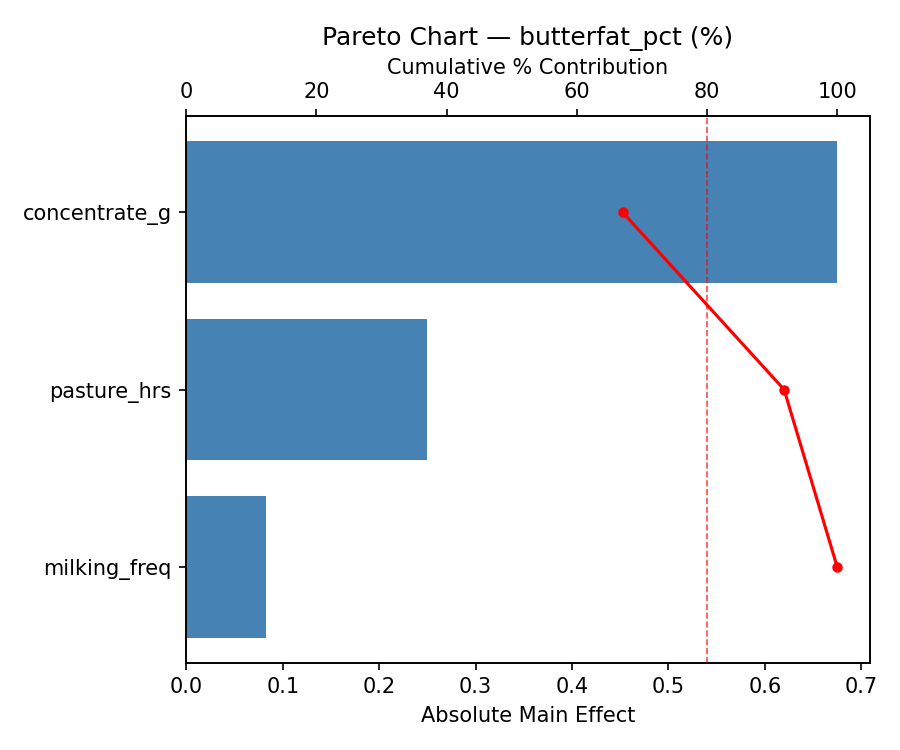
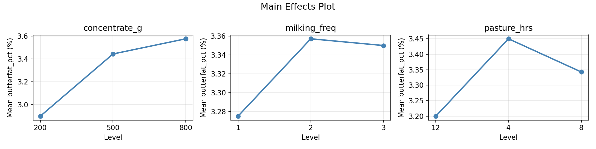
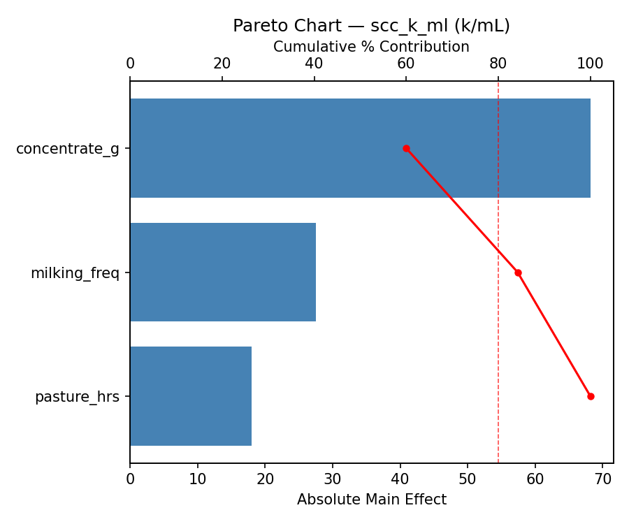
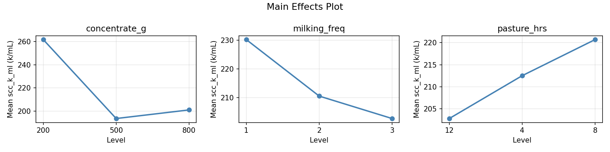
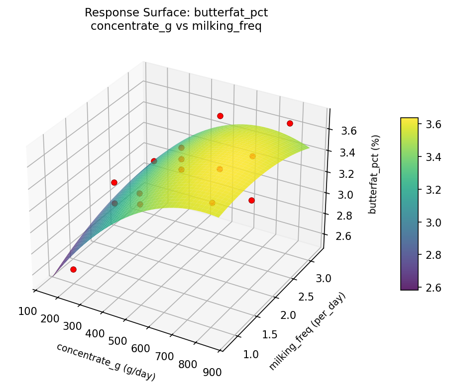
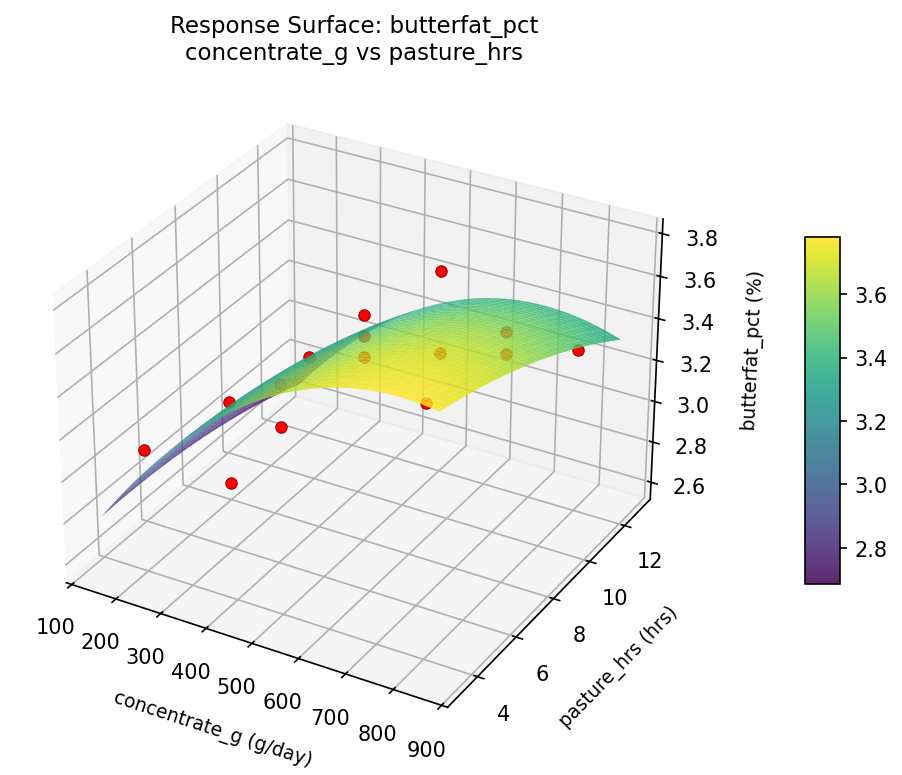
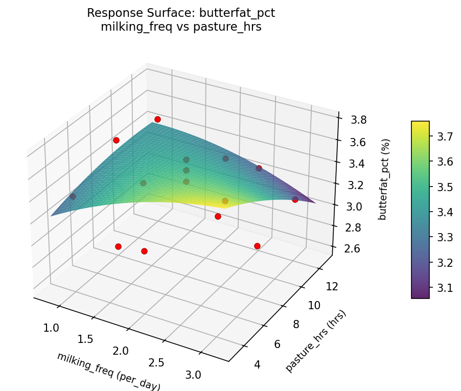
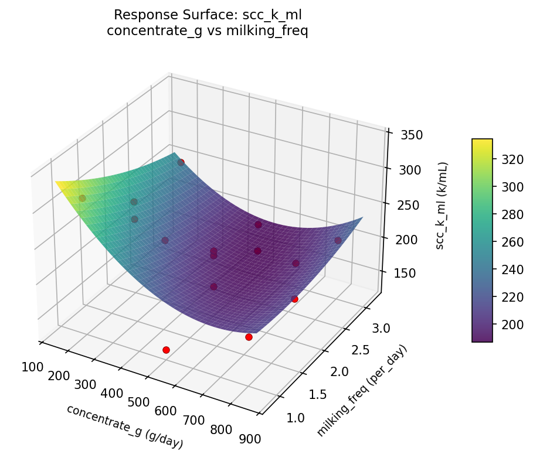
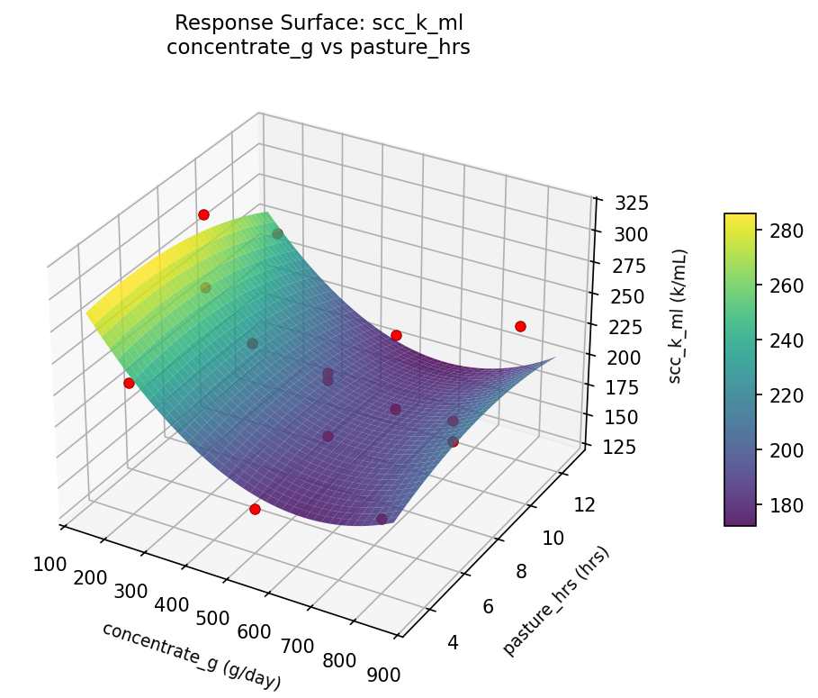
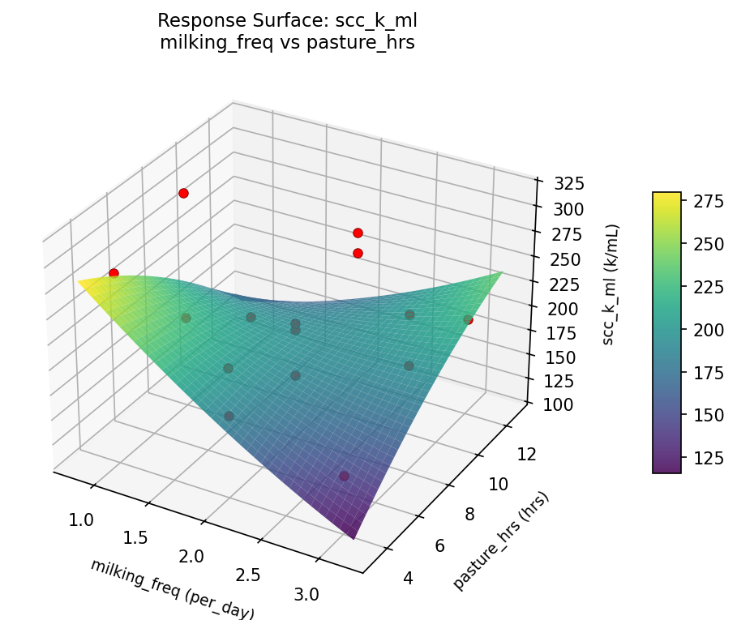

Summary
This experiment investigates goat milk quality factors. Box-Behnken design to maximize butterfat content and minimize somatic cell count by tuning concentrate supplementation, milking frequency, and pasture access hours.
The design varies 3 factors: concentrate g (g/day), ranging from 200 to 800, milking freq (per_day), ranging from 1 to 3, and pasture hrs (hrs), ranging from 4 to 12. The goal is to optimize 2 responses: butterfat pct (%) (maximize) and scc k ml (k/mL) (minimize). Fixed conditions held constant across all runs include breed = saanen, lactation week = 12.
A Box-Behnken design was chosen because it efficiently fits quadratic models with 3 continuous factors while avoiding extreme corner combinations — requiring only 15 runs instead of the 8 needed for a full factorial at two levels.
Quadratic response surface models were fitted to capture potential curvature and factor interactions. The RSM contour plots below visualize how pairs of factors jointly affect each response.
Key Findings
For butterfat pct, the most influential factors were concentrate g (36.1%), milking freq (36.1%), pasture hrs (27.8%). The best observed value was 3.7 (at concentrate g = 200, milking freq = 2, pasture hrs = 4).
For scc k ml, the most influential factors were pasture hrs (48.5%), concentrate g (34.5%), milking freq (17.0%). The best observed value was 133.0 (at concentrate g = 500, milking freq = 2, pasture hrs = 8).
Recommended Next Steps
- Run confirmation experiments at the predicted optimal settings to validate the model.
- Consider whether any fixed factors should be varied in a future study.
Experimental Setup
Factors
| Factor | Low | High | Unit |
|---|
concentrate_g | 200 | 800 | g/day |
milking_freq | 1 | 3 | per_day |
pasture_hrs | 4 | 12 | hrs |
Fixed: breed = saanen, lactation_week = 12
Responses
| Response | Direction | Unit |
|---|
butterfat_pct | ↑ maximize | % |
scc_k_ml | ↓ minimize | k/mL |
Configuration
{
"metadata": {
"name": "Goat Milk Quality Factors",
"description": "Box-Behnken design to maximize butterfat content and minimize somatic cell count by tuning concentrate supplementation, milking frequency, and pasture access hours"
},
"factors": [
{
"name": "concentrate_g",
"levels": [
"200",
"800"
],
"type": "continuous",
"unit": "g/day"
},
{
"name": "milking_freq",
"levels": [
"1",
"3"
],
"type": "continuous",
"unit": "per_day"
},
{
"name": "pasture_hrs",
"levels": [
"4",
"12"
],
"type": "continuous",
"unit": "hrs"
}
],
"fixed_factors": {
"breed": "saanen",
"lactation_week": "12"
},
"responses": [
{
"name": "butterfat_pct",
"optimize": "maximize",
"unit": "%"
},
{
"name": "scc_k_ml",
"optimize": "minimize",
"unit": "k/mL"
}
],
"settings": {
"operation": "box_behnken",
"test_script": "use_cases/296_goat_milk_quality/sim.sh"
}
}
Experimental Matrix
The Box-Behnken Design produces 15 runs. Each row is one experiment with specific factor settings.
| Run | concentrate_g | milking_freq | pasture_hrs |
|---|
| 1 | 500 | 1 | 4 |
| 2 | 500 | 2 | 8 |
| 3 | 800 | 2 | 12 |
| 4 | 800 | 2 | 4 |
| 5 | 500 | 2 | 8 |
| 6 | 500 | 2 | 8 |
| 7 | 200 | 2 | 12 |
| 8 | 800 | 1 | 8 |
| 9 | 500 | 1 | 12 |
| 10 | 800 | 3 | 8 |
| 11 | 200 | 2 | 4 |
| 12 | 500 | 3 | 12 |
| 13 | 200 | 1 | 8 |
| 14 | 200 | 3 | 8 |
| 15 | 500 | 3 | 4 |
Step-by-Step Workflow
1
Preview the design
$ python doe.py info --config use_cases/296_goat_milk_quality/config.json
2
Generate the runner script
$ python doe.py generate --config use_cases/296_goat_milk_quality/config.json \
--output use_cases/296_goat_milk_quality/results/run.sh --seed 42
3
Execute the experiments
$ bash use_cases/296_goat_milk_quality/results/run.sh
4
Analyze results
$ python doe.py analyze --config use_cases/296_goat_milk_quality/config.json
5
Get optimization recommendations
$ python doe.py optimize --config use_cases/296_goat_milk_quality/config.json
6
Multi-objective optimization
With 2 competing responses, use --multi to find the best compromise via Derringer–Suich desirability.
$ python doe.py optimize --config use_cases/296_goat_milk_quality/config.json --multi
7
Generate the HTML report
$ python doe.py report --config use_cases/296_goat_milk_quality/config.json \
--output use_cases/296_goat_milk_quality/results/report.html
Features Exercised
| Feature | Value |
|---|
| Design type | box_behnken |
| Factor types | continuous (all 3) |
| Arg style | double-dash |
| Responses | 2 (butterfat_pct ↑, scc_k_ml ↓) |
| Total runs | 15 |
Analysis Results
Generated from actual experiment runs using the DOE Helper Tool.
Response: butterfat_pct
Top factors: concentrate_g (36.1%), milking_freq (36.1%), pasture_hrs (27.8%).
Pareto Chart

Main Effects Plot

Response: scc_k_ml
Top factors: pasture_hrs (48.5%), concentrate_g (34.5%), milking_freq (17.0%).
Pareto Chart

Main Effects Plot

Response Surface Plots
3D surfaces fitted with quadratic RSM. Red dots are observed data points.
butterfat pct concentrate g vs milking freq

butterfat pct concentrate g vs pasture hrs

butterfat pct milking freq vs pasture hrs

scc k ml concentrate g vs milking freq

scc k ml concentrate g vs pasture hrs

scc k ml milking freq vs pasture hrs

Multi-Objective Optimization
When responses compete, Derringer–Suich desirability finds the best compromise.
Each response is scaled to a 0–1 desirability, then combined via a weighted geometric mean.
Overall Desirability
D = 0.8949
Per-Response Desirability
| Response | Weight | Desirability | Predicted | Dir |
|---|
butterfat_pct |
1.5 |
|
4.02 1.0000 4.02 % |
↑ |
scc_k_ml |
1.0 |
|
171.98 0.7577 171.98 k/mL |
↓ |
Recommended Settings
| Factor | Value |
|---|
concentrate_g | 200 g/day |
milking_freq | 3 per_day |
pasture_hrs | 4 hrs |
Source: from RSM model prediction
Trade-off Summary
Sacrifice = how much worse than single-objective best.
| Response | Predicted | Best Observed | Sacrifice |
|---|
scc_k_ml | 171.98 | 133.00 | +38.98 |
Top 3 Runs by Desirability
| Run | D | Factor Settings |
|---|
| #15 | 0.8516 | concentrate_g=200, milking_freq=2, pasture_hrs=4 |
| #12 | 0.8514 | concentrate_g=800, milking_freq=3, pasture_hrs=8 |
Model Quality
| Response | R² | Type |
|---|
scc_k_ml | 0.3290 | linear |
Full Multi-Objective Output
============================================================
MULTI-OBJECTIVE OPTIMIZATION
Method: Derringer-Suich Desirability Function
============================================================
Overall desirability: D = 0.8949
Response Weight Desirability Predicted Direction
---------------------------------------------------------------------
butterfat_pct 1.5 1.0000 4.02 % ↑
scc_k_ml 1.0 0.7577 171.98 k/mL ↓
Recommended settings:
concentrate_g = 200 g/day
milking_freq = 3 per_day
pasture_hrs = 4 hrs
(from RSM model prediction)
Trade-off summary:
butterfat_pct: 4.02 (best observed: 3.70, sacrifice: -0.32)
scc_k_ml: 171.98 (best observed: 133.00, sacrifice: +38.98)
Model quality:
butterfat_pct: R² = 0.8265 (quadratic)
scc_k_ml: R² = 0.3290 (linear)
Top 3 observed runs by overall desirability:
1. Run #10 (D=0.8583): concentrate_g=500, milking_freq=3, pasture_hrs=4
2. Run #15 (D=0.8516): concentrate_g=200, milking_freq=2, pasture_hrs=4
3. Run #12 (D=0.8514): concentrate_g=800, milking_freq=3, pasture_hrs=8
Full Analysis Output
=== Main Effects: butterfat_pct ===
Factor Effect Std Error % Contribution
--------------------------------------------------------------
concentrate_g 0.3893 0.0843 36.1%
milking_freq 0.3893 0.0843 36.1%
pasture_hrs 0.3000 0.0843 27.8%
=== ANOVA Table: butterfat_pct ===
Source DF SS MS F p-value
-----------------------------------------------------------------------------
concentrate_g 2 0.3873 0.1936 19.363 0.0009
milking_freq 2 0.3873 0.1936 19.363 0.0009
pasture_hrs 2 0.1812 0.0906 9.060 0.0088
Lack of Fit 6 0.5176 0.0863 8.627 0.1075
Pure Error 2 0.0200 0.0100
Error 8 0.5376 0.0100
Total 14 1.4933 0.1067
=== Summary Statistics: butterfat_pct ===
concentrate_g:
Level N Mean Std Min Max
------------------------------------------------------------
200 4 3.5750 0.1258 3.4000 3.7000
500 7 3.1857 0.2193 2.9000 3.5000
800 4 3.3500 0.5066 2.6000 3.7000
milking_freq:
Level N Mean Std Min Max
------------------------------------------------------------
1 4 3.3500 0.2082 3.1000 3.6000
2 7 3.1857 0.3891 2.6000 3.6000
3 4 3.5750 0.1500 3.4000 3.7000
pasture_hrs:
Level N Mean Std Min Max
------------------------------------------------------------
12 4 3.4750 0.1258 3.3000 3.6000
4 4 3.1750 0.4349 2.6000 3.6000
8 7 3.3429 0.3409 2.9000 3.7000
=== Main Effects: scc_k_ml ===
Factor Effect Std Error % Contribution
--------------------------------------------------------------
pasture_hrs 75.2500 12.6587 48.5%
concentrate_g 53.5000 12.6587 34.5%
milking_freq 26.3214 12.6587 17.0%
=== ANOVA Table: scc_k_ml ===
Source DF SS MS F p-value
-----------------------------------------------------------------------------
concentrate_g 2 7608.5048 3804.2524 3.328 0.0888
milking_freq 2 2514.4690 1257.2345 1.100 0.3784
pasture_hrs 2 12261.7548 6130.8774 5.364 0.0333
Lack of Fit 6 8980.2048 1496.7008 1.309 0.4936
Pure Error 2 2286.0000 1143.0000
Error 8 11266.2048 1143.0000
Total 14 33650.9333 2403.6381
=== Summary Statistics: scc_k_ml ===
concentrate_g:
Level N Mean Std Min Max
------------------------------------------------------------
200 4 176.5000 23.3452 156.0000 208.0000
500 7 225.7143 49.7886 133.0000 287.0000
800 4 230.0000 56.3738 188.0000 313.0000
milking_freq:
Level N Mean Std Min Max
------------------------------------------------------------
1 4 202.0000 32.9747 162.0000 231.0000
2 7 227.5714 50.6585 156.0000 313.0000
3 4 201.2500 64.4897 133.0000 287.0000
pasture_hrs:
Level N Mean Std Min Max
------------------------------------------------------------
12 4 183.5000 46.5224 133.0000 231.0000
4 4 258.7500 49.4124 208.0000 313.0000
8 7 205.2857 35.5233 162.0000 255.0000
Optimization Recommendations
=== Optimization: butterfat_pct ===
Direction: maximize
Best observed run: #3
concentrate_g = 200
milking_freq = 2
pasture_hrs = 4
Value: 3.7
RSM Model (linear, R² = 0.1256, Adj R² = -0.1129):
Coefficients:
intercept +3.3333
concentrate_g -0.0875
milking_freq +0.1250
pasture_hrs +0.0125
RSM Model (quadratic, R² = 0.4247, Adj R² = -0.6109):
Coefficients:
intercept +3.3333
concentrate_g -0.0875
milking_freq +0.1250
pasture_hrs +0.0125
concentrate_g*milking_freq -0.1750
concentrate_g*pasture_hrs -0.1000
milking_freq*pasture_hrs -0.2250
concentrate_g^2 +0.0583
milking_freq^2 -0.1167
pasture_hrs^2 +0.0583
Curvature analysis:
milking_freq coef=-0.1167 concave (has a maximum)
concentrate_g coef=+0.0583 negligible curvature
pasture_hrs coef=+0.0583 negligible curvature
Predicted optimum (from linear model, at observed points):
concentrate_g = 200
milking_freq = 3
pasture_hrs = 8
Predicted value: 3.5458
Surface optimum (via L-BFGS-B, linear model):
concentrate_g = 200
milking_freq = 3
pasture_hrs = 12
Predicted value: 3.5583
Model quality: Weak fit — consider adding center points or using a different design.
Factor importance:
1. milking_freq (effect: 0.2, contribution: 50.0%)
2. concentrate_g (effect: 0.2, contribution: 35.0%)
3. pasture_hrs (effect: 0.1, contribution: 15.0%)
=== Optimization: scc_k_ml ===
Direction: minimize
Best observed run: #15
concentrate_g = 500
milking_freq = 2
pasture_hrs = 8
Value: 133.0
RSM Model (linear, R² = 0.1808, Adj R² = -0.0427):
Coefficients:
intercept +213.7333
concentrate_g +6.2500
milking_freq -23.5000
pasture_hrs +13.0000
RSM Model (quadratic, R² = 0.4868, Adj R² = -0.4369):
Coefficients:
intercept +191.0000
concentrate_g +6.2500
milking_freq -23.5000
pasture_hrs +13.0000
concentrate_g*milking_freq +8.7500
concentrate_g*pasture_hrs -1.7500
milking_freq*pasture_hrs +39.2500
concentrate_g^2 +9.3750
milking_freq^2 +1.8750
pasture_hrs^2 +31.3750
Curvature analysis:
pasture_hrs coef=+31.3750 convex (has a minimum)
concentrate_g coef=+9.3750 convex (has a minimum)
milking_freq coef=+1.8750 convex (has a minimum)
Notable interactions:
milking_freq*pasture_hrs coef=+39.2500 (synergistic)
concentrate_g*milking_freq coef=+8.7500 (synergistic)
concentrate_g*pasture_hrs coef=-1.7500 (antagonistic)
Predicted optimum (from linear model, at observed points):
concentrate_g = 500
milking_freq = 1
pasture_hrs = 12
Predicted value: 250.2333
Surface optimum (via L-BFGS-B, linear model):
concentrate_g = 200
milking_freq = 3
pasture_hrs = 4
Predicted value: 170.9833
Model quality: Weak fit — consider adding center points or using a different design.
Factor importance:
1. milking_freq (effect: 47.0, contribution: 45.3%)
2. pasture_hrs (effect: 43.6, contribution: 42.0%)
3. concentrate_g (effect: 13.2, contribution: 12.8%)